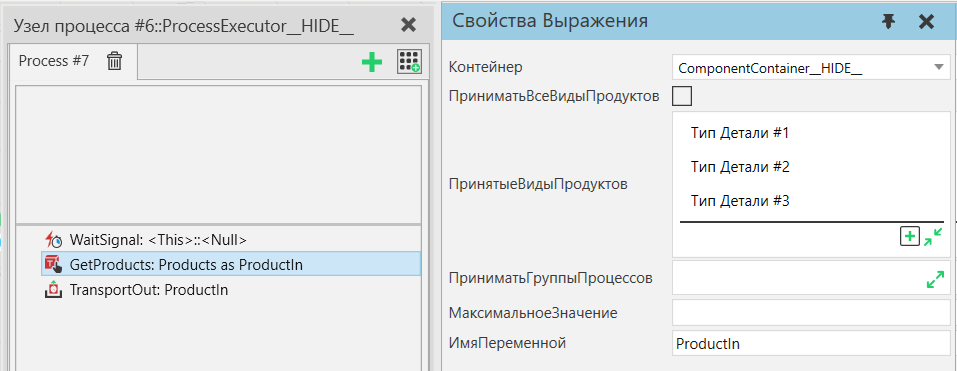

Получить Продукты |
|
Получает ссылки на экземпляры продукта из контейнера компонентов и сохраняет их в переменной процесса. Возвращаются только экземпляры продукта, соответствующие фильтру типа продукта, а максимальное количество возвращаемых экземпляров продукта может быть ограничено с помощью свойства MaxCount. Обратите внимание, что этот оператор просто возвращает ссылки на экземпляры продукта, соответствующие критериям фильтра. Следует проявлять особую осторожность, чтобы избежать дублирования ссылок на одни и те же Экземпляры Продукта или другой логики, также управляющей Экземплярами Продукта параллельно с вашим Процессом. Например, вы можете случайно сохранить ссылки на Экземпляры Продукта после того, как они были перемещены из контейнера или даже в другой Процесс. Параллельное управление одними и теми же Экземплярами продукта из разных Процессов или с помощью другой логики параллельно операторам Процесса обычно не поддерживается и может привести к непредвиденному поведению.  Рисунок 1. Пример Процесса, ожидающего внешней логики для размещения Экземпляров Продукта в контейнере компонентов и запуска сигнала. Затем он получает ссылки на Экземпляры продукта, которые принадлежат некоторым Продуктам, в переменную процесса «ProductIn». Наконец, он транспортирует продукты к следующему процессу. Свойства
|